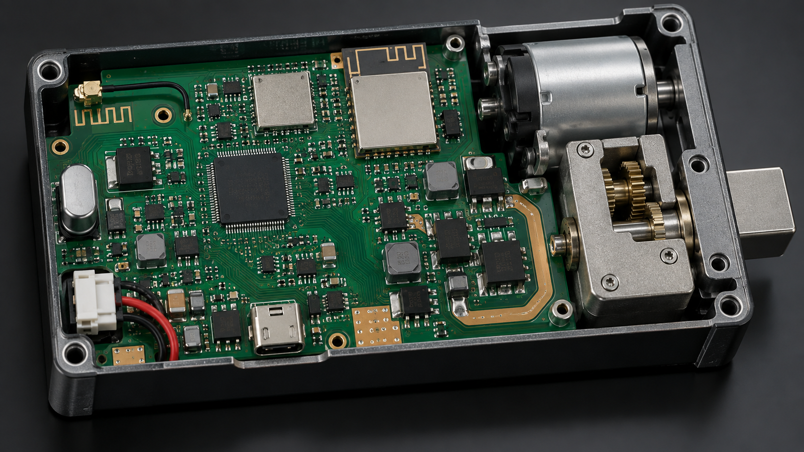
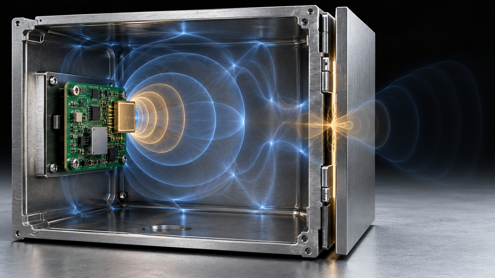
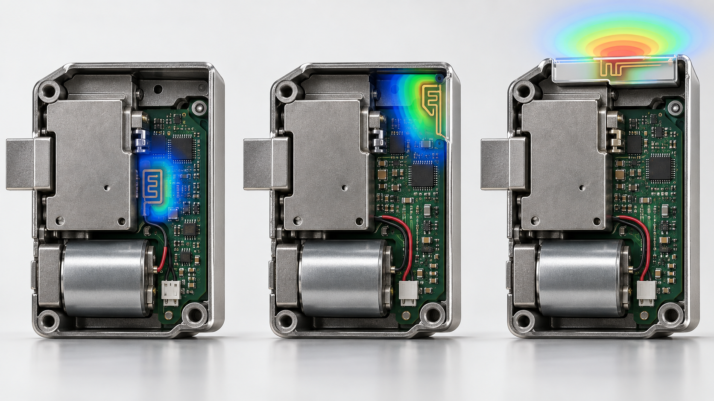
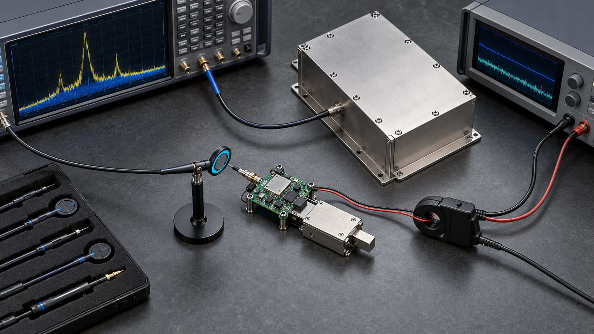

本文说明通用工程原理，不对任何 WAFU 产品或柜体配置承诺固定通信距离；实际可靠性必须在最终柜体上验证。
无线锁在开放台架上运行正常，并不代表关上金属柜门后仍有稳定信号。柜体本身会成为射频系统的一部分：它反射能量、改变天线谐振、阻断传播路径，还可能把电机噪声耦合到无线模块。可靠设计必须从 PCB 布局开始，以真实柜体闭门测试结束。
1. 把金属柜体视为射频边界
钢板和铝板会反射、吸收无线能量。接近封闭的柜体类似不完整的法拉第屏蔽体，门缝、铰链、走线孔和非金属窗口会成为主要泄漏路径，细小结构变化也可能显著改变链路质量。
锁体位置、天线方向和用户位置必须一起评估。若天线朝向柜体内部，能量可能主要耦合进金属腔体，而不是传到柜外接收端。
2. 按项目角色比较 433 MHz、Bluetooth 与 Wi-Fi
433 MHz 适合简单、低功耗的遥控控制，对部分遮挡可能更宽容，但仍受天线尺寸和区域法规约束。Bluetooth 适合近距离手机开锁和配置，Wi-Fi 可直接联网，但通常功耗更高，也依赖接入点位置。
频率更低不等于一定能穿透金属。协议开销、天线效率、发射功率、接收灵敏度、占空比和柜体几何共同决定可用链路余量。

3. 为天线保留净空并选择正确位置
应按照所选模块或天线要求，让铜皮、地平面、电池、电机和金属支架远离天线区域。把天线放到柜体边缘或受控的非金属窗口附近，通常比单纯提高发射功率更有效。
必须评估装配后的整机。线束、螺钉、屏蔽罩和电池仓变化，都可能让裸板测试正常的天线在量产结构中失谐。

4. 隔离电机噪声与无线链路
锁闭瞬间会出现电流阶跃、电刷噪声和电压跌落。供电路径、本地去耦、接地和走线隔离需要保证无线模块与控制器在最大机械负载下仍然稳定。
测试应覆盖电机启动、短时堵转和反转，同时观察通信。若系统只能在电机静止时保持无线连接，它可能在远程开锁最需要确认的瞬间失效。
5. 必须在柜门关闭状态验证
分别记录开门和闭门状态下的配对、命令成功率、响应时间和故障恢复，并在真实用户位置、邻近柜体和实际网关条件下测试，同时覆盖低电量和连续操作。
报告必须记录方向、距离、柜体材料、门缝、天线版本、固件和电源状态。脱离这些条件的单一“最远距离”不能作为验收标准。

6. 用测试证据决定系统架构
若天线无法靠近透波边界，应考虑受保护的外置天线、有线读卡器、外部网关或不同的授权架构。正确答案可能是机械与电气重构，而不是修改一个无线参数。
批准样机后，应冻结天线几何、柜体材料和线束路径。即使电路图不变，天线周围的量产结构变化也必须做回归测试。
7. 结论：柜体就是天线系统的一部分
金属柜无线锁的射频表现不是单独的 PCB 指标。柜体几何、天线净空、接地、电机电流和现场位置共同决定结果。
先定义柜体和用户路径，再为 433 MHz、Bluetooth 或 Wi-Fi 设定明确角色，最后在完整闭门组件上完成量产前验证。
项目咨询与 OEM/ODM
请提供柜体图纸、板材、数量和无线需求，以便确定可验证的样机开发路径。